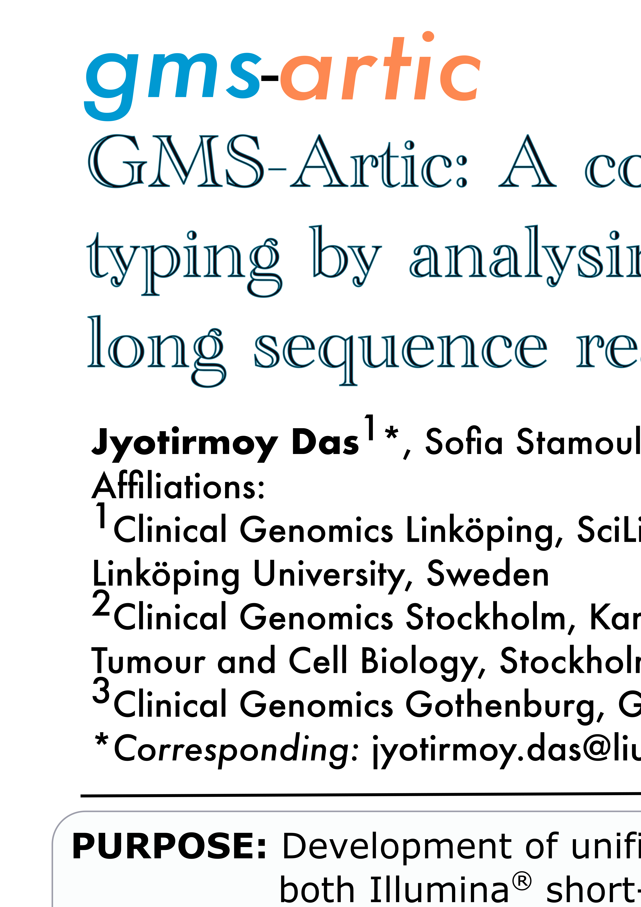
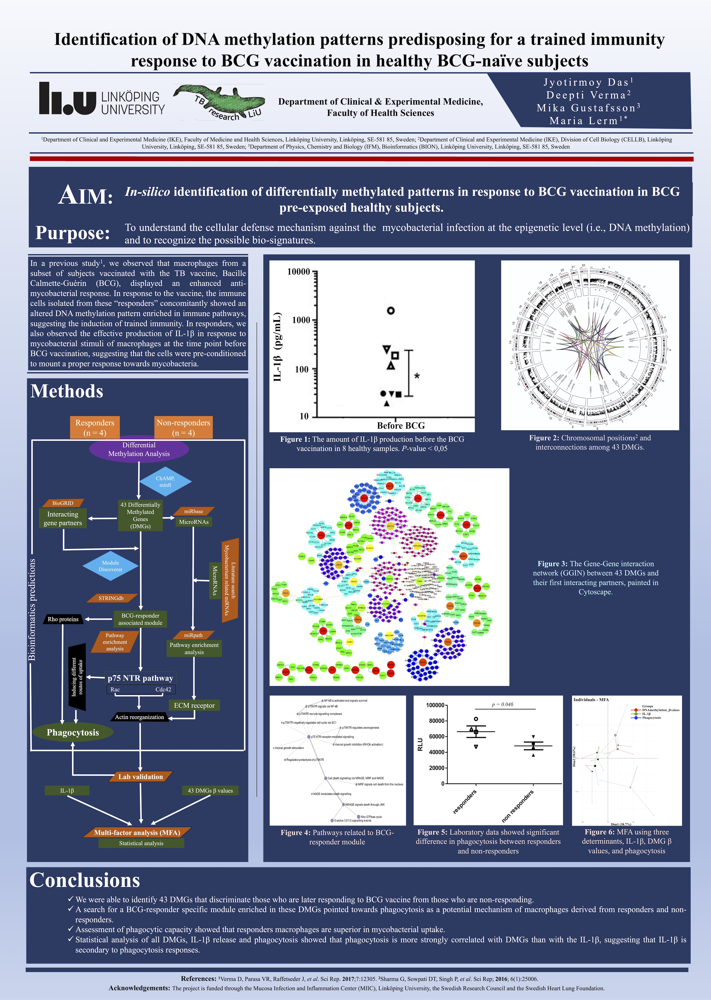
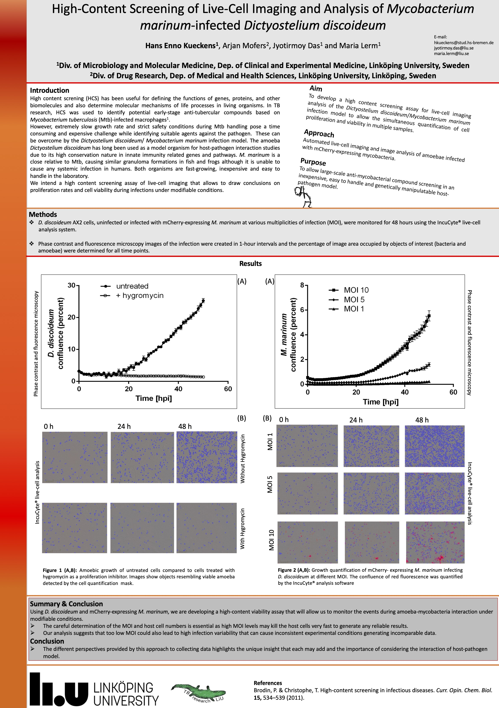

Accomplishments
Invited Reviewer of Journals
- Frontiers in Genetics
- Peer J
- IJERPH
- International Journal of Molecular Sciences
- Genomics
- Genes & Genomics
- Cancer Management and Research
- Journal of Biomolecular Structure & Dynamics
Collaborations
- Prof. Mika Gustafsson, Linköping University
- Prof. Peter Söderkvist, Linköping University
- Prof. Thomas Schön, Kalmar University
- Dr. Deepti Verma, Linköping University
- Dr. Lasse Jensen, Linköping University
- Dr. Ahmed Elserafy, Linköping University
- Dr. Amanda Welin, Linköping University
- Dr. Kamalika Sen, Bose Institute
- Dr. Hirak Patra, University of Cambridge
Community Networking
Presentations

2022
Poster presentation on GMS-Artic: A containerized Nextflow pipeline for detecting Pangolin typing by analysing SARS-CoV-2 whole genome from short and long read sequence reads at Aula Medica, KI, Sweden organised by Journal of Internal Medicine & Genomic Medicine, Sweden.
2021
Brief oral presentation on Visualization, front-end solutions at Sigtuna, Sweden organised by Clinical Genomics, Sweden.

2019
Poster presentation on Identification of DNA methylation patterns predisposing for a trained immunity response to BCG vaccination in healthy BCG-naive subjects at Sigtuna, Sweden organised by Clinical Genomics, Sweden.
2019
Lecture presentation on Machine Learning and Epigenetics Linköping University, Sweden. Demonstrating the Machine Learning approach towards the big data of epigentics among a group of undergraduate enginnering students from Purdue University, USA.
2019
Brief oral presentation on marketing own research organised by Mucosal Infection and Inflammation Center (MIIC), Linköping University, Sweden. win best presenter award (1/3)
2018
Lecture presentation on Advance image analysis using MATLAB organised by The National Doctoral Programme in Infection and Antibiotics (NDPIA) from Swdish Research Council (VR) at the Linköping University, Sweden.

2018
Poster presentation on High-Content Screening of Live-Cell Imaging and Analysis of Mycobacterium marinum-infected Dictyostelium discoideum organised by Tuberculosis research, Sweden.